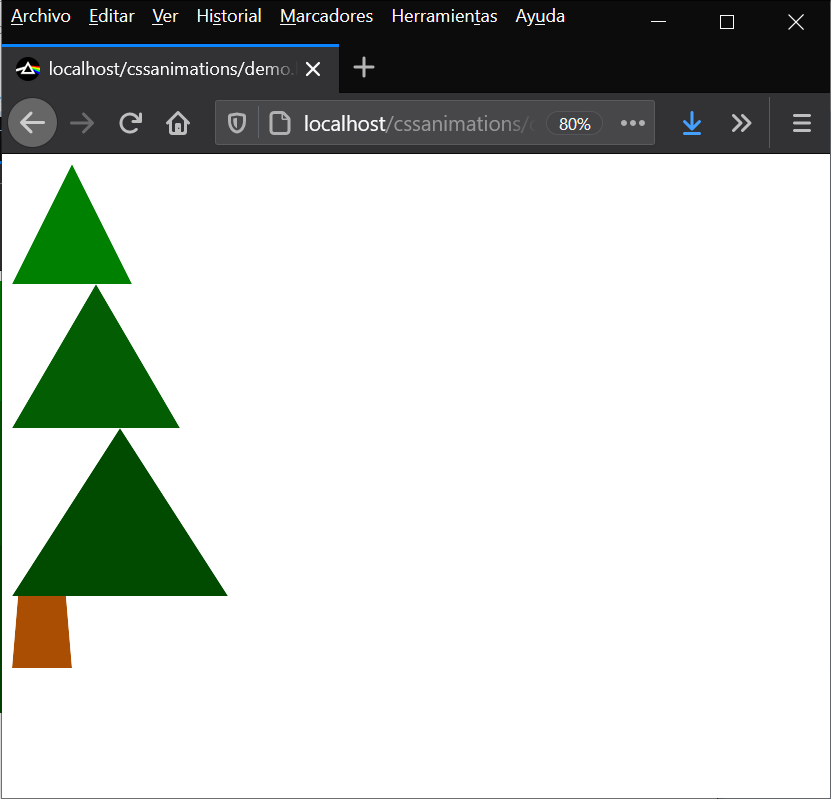
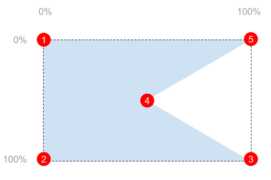

Utilitza la propietat clip-path per a retallar en forma de triangle les copes
de l'arbre:

Per a retallar en forma de triangle es pot utilitzar la funció polygon().
Cal indicar entre parèntesi els punts del triangle. Cada punt es defineix amb el
percentatge de l'amplada i el percentatge de l'alçada.
Per exemple, per a retallar amb la forma d'aquest polygon:

Podem definir els punts així:
clip-path: polygon(0% 0%, 0% 100%, 100% 100%, 50% 50%, 100% 0%)